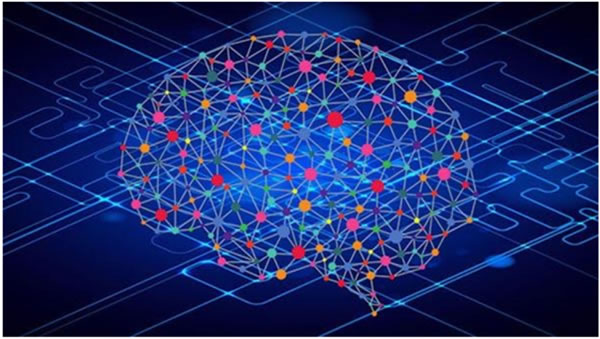
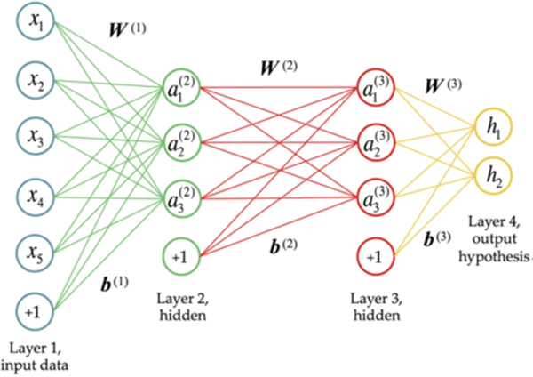
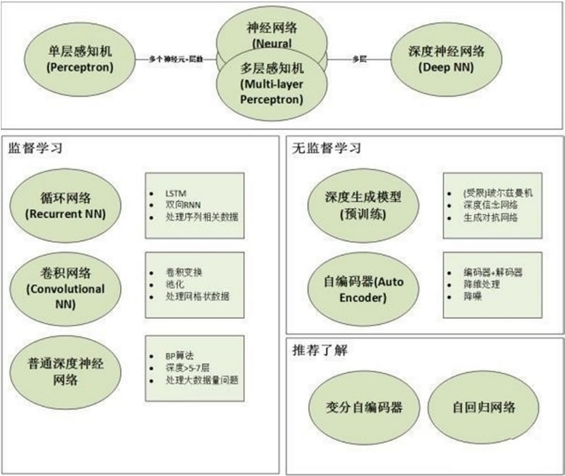
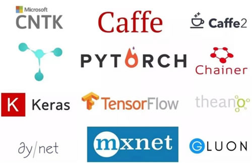

首页 > 编程笔记
深度学习精讲（超级详细）
深度学习（Deep Learning，DL）是机器学习（Machine Learning，ML）领域中一个新的研究方向，深度学习被引入机器学习，目的是使机器学习更接近于最初的目标——人工智能（Artificial Intelligence，AI）。
深度学习是学习样本数据的内在规律和表现层次，这些在学习过程中获得的信息对文字、图像和声音等数据的解释有很大的帮助。
深度学习的最终目标是让机器能够像人一样具有分析、学习能力，能够识别文字、图像和声音等数据。深度学习是一系列复杂的机器学习算法，它在语音和图像识别方面取得的效果远远超过先前的相关技术。
深度学习在搜索技术、数据挖掘、机器学习、机器翻译、自然语言处理、多媒体学习、语音、推荐和个性化技术，以及其他相关领域都取得了很多成果。深度学习使机器模仿视听和思考等人类的活动，解决了很多复杂的模式识别难题，使得人工智能相关技术取得了很大进步。
深度学习的概念源于人工神经网络的研究，含多个隐藏层的多层感知器就是一种深度学习结构。深度学习通过组合低层特征，形成更加抽象的高层来表示属性类别或特征，以发现数据的分布式特征表示。研究深度学习的动机在于建立模拟人脑进行分析学习的神经网络，它模仿人脑的机制来解释数据，例如图像、声音和文本等。
深度学习从字面理解包含两个意思，分别是“深度”和“学习”。
抽象地说，我们的学习就是一个认知的过程，从学习未知开始，到对已知的总结、归纳、思考与探索。比如伸出一根手指就是 1，伸出两根手指加在一起就是 1+1=2。这是一个简单的探索和归纳过程，也是人类学习的最初形态。
所以总结来说，这种从已经有的信息通过计算、判定和推理，而后得到一个认知结果的过程就是“学习”。
那么，读者看到这里也许会问，这个所谓的“学习”和“深度学习”又有什么关系？这里不妨更进一步地提出一个问题：对于同样的学习内容，为什么有的学生学习好而有的学生学习差？
这就涉及一个“学习策略”和“学习方法”的问题。对同样的题目，不同的学生由于具有不同的认知和思考过程，而根据其不同的认知得到的答案往往千差万别，归根结底，也就是由于不同的学生具有不同的“学习策略”和“学习方法”而导致不同的结果。
为了模拟人脑中的“学习策略”和“学习方法”，学术界研究出使用计算机去模拟这一学习过程的方法，被称为“神经网络”。
这个词从字面上看和人脑有着一点关系。在人脑中负责活动的基本单元是“神经元”，它以细胞体为主体，由许多向周围延伸的不规则树枝状纤维构成的神经细胞。人脑中含有上百亿个神经元，而这些神经元互相连接成一个更庞大的结构，称为“神经网络”，如下图所示。
但是到目前为止，科学界还是没有弄清楚人脑工作的具体过程和思考传递的方式，所以这个“神经网络”也只是模拟而已。
但是，随着输入的复杂性增强，例如当你伸出三根手指，那么正常的计算过程就是先计算 1+1=2，之后在得到 2 这个值的基础上再计算 2+1=3，这才是一个正常的计算过程。
这里举这个例子是向读者说明，数据的输入和计算过程随着输入数据的复杂性增加，需要一个层次化的计算过程，也就是将整体的计算过程分布到各个不同的“层次”上去计算。
下图展示了一个具有“层次”的深度学习模型：
hidden_layer_1 到 hidden_layer_n 是隐藏层，而左边的 input_layer 和右边的 output_layer 是输出层。如果这是一个计算题的话，那么在每个隐藏层中，都是对此题过程的一个步骤和细节进行处理。
可以设想，随着隐藏层的增加以及隐藏层内部处理单元的增多，能够在一个步骤中处理的内容就更多，所使用的数据更为复杂，而能够给出的结果就越多，因此可以在最大限度上对结果进行拟合，从而得到一个近似于“正确”的最终输出。
归根结底，所谓“深度”就是人为地使用不同层次不同任务目标的“分层”神经元，去模拟整个输入、输出过程的一种手段。
至于深度学习的应用场景和领域很多，目前来说主要是计算机视觉和自然语言处理，以及各种预测等。对于计算机视觉，可以做图像分类、目标检测、视频中的目标检测等；对于自然语言处理，可以做语音识别、语音合成、对话系统、机器翻译、文章摘要、情感分析等，还可以结合图像、视频和语音，一起发挥价值。
更可以深入某一个行业领域。例如，深入医学行业领域，做医学影像的识别；深入淘宝的穿衣领域，做衣服搭配或衣服款型的识别；深入保险业、通信业的客服领域，做对话机器人的智能问答系统；深入智能家居领域，做人机的自然语言交互等等。
总之，适合掌握深度学习的任务应该具备如下特点：
最初卷积神经网络计算模型是对人类视神经研究中提出的，其基于视觉神经元之间的局部连接和分层组织图像转换，将有相同参数的神经元应用于前一层神经网络的不同位置，得到一种平移不变的神经网络结构形式。
后来，Le Cun 等人在该思想的基础上，用误差梯度设计并训练卷积神经网络，在一些模式识别任务上得到优越的性能。至今，基于卷积神经网络的模式识别系统是最好的实现系统之一，尤其在物体的识别、检测和追踪任务上表现出非凡的性能。
深度置信网络模型由多个结构单元堆栈组成，结构单元通常为 RBM（Restricted Boltzmann Machine，受限玻尔兹曼机）。堆栈中每个 RBM 单元的可视层神经元数量等于前一 RBM 单元的隐藏层神经元数量。
根据深度学习机制，采用输入样例训练第一层 RBM 单元，并利用其输出训练第二层 RBM 模型，将 RBM 模型进行堆栈通过增加层来改善模型性能。在无监督预训练过程中，DBN 编码输入到顶层 RBM 后，解码顶层的状态到最底层的单元，实现输入的重构。RBM 作为 DBN 的结构单元，与每一层 DBN 共享参数。
下图展示了更为细分的深度学习模型和训练分类，可以看到随着对深度学习的深入研究，不仅仅包括单纯从模型的构建来分类，还有训练方式、构建架构等更为细分的分类方法。
目前市场上有多种框架，如下图所示：
从作者的经验来看，无论前端技术框架还是后端技术框架以及深度学习技术框架，在决定使用前，都需要考虑以下几个方面，这些就是在框架选型上通用的依据。
深度学习流行的框架有 PyTorch、Keras、Caffe 等，在相同的条件下，PyTorch 运行速度要快很多，而 Keras 在这几种框架中是速度比较慢的，但是在真正的工程应用中造成这样的差距，多来自于样本的数量和网络设计等方面，这个方面的差距往往是10倍或者100倍，而语言的效率与其相比几乎可以忽略不计。所以语言的性能不是最主要的参考标准。
综上面 3 点所述，应该说 Keras 在这些方面做得都是非常不错的：
所以总的来讲，Keras 应该是现有深度学习框架中比较适合用来进行工程应用的。
深度学习是学习样本数据的内在规律和表现层次，这些在学习过程中获得的信息对文字、图像和声音等数据的解释有很大的帮助。
深度学习的最终目标是让机器能够像人一样具有分析、学习能力，能够识别文字、图像和声音等数据。深度学习是一系列复杂的机器学习算法，它在语音和图像识别方面取得的效果远远超过先前的相关技术。
深度学习在搜索技术、数据挖掘、机器学习、机器翻译、自然语言处理、多媒体学习、语音、推荐和个性化技术，以及其他相关领域都取得了很多成果。深度学习使机器模仿视听和思考等人类的活动，解决了很多复杂的模式识别难题，使得人工智能相关技术取得了很大进步。
深度学习的含义
深度学习是机器学习的一种，而机器学习是实现人工智能的必经之路。深度学习的概念源于人工神经网络的研究，含多个隐藏层的多层感知器就是一种深度学习结构。深度学习通过组合低层特征，形成更加抽象的高层来表示属性类别或特征，以发现数据的分布式特征表示。研究深度学习的动机在于建立模拟人脑进行分析学习的神经网络，它模仿人脑的机制来解释数据，例如图像、声音和文本等。
深度学习从字面理解包含两个意思，分别是“深度”和“学习”。
1) 学习
我们从小就听着“好好学习，天天向上”的教诲，然后按时到校上课，在课堂上认真听讲，努力完成作业，在考试中取得一个好的名次。抽象地说，我们的学习就是一个认知的过程，从学习未知开始，到对已知的总结、归纳、思考与探索。比如伸出一根手指就是 1，伸出两根手指加在一起就是 1+1=2。这是一个简单的探索和归纳过程，也是人类学习的最初形态。
所以总结来说，这种从已经有的信息通过计算、判定和推理，而后得到一个认知结果的过程就是“学习”。
那么，读者看到这里也许会问，这个所谓的“学习”和“深度学习”又有什么关系？这里不妨更进一步地提出一个问题：对于同样的学习内容，为什么有的学生学习好而有的学生学习差？
这就涉及一个“学习策略”和“学习方法”的问题。对同样的题目，不同的学生由于具有不同的认知和思考过程，而根据其不同的认知得到的答案往往千差万别，归根结底，也就是由于不同的学生具有不同的“学习策略”和“学习方法”而导致不同的结果。
为了模拟人脑中的“学习策略”和“学习方法”，学术界研究出使用计算机去模拟这一学习过程的方法，被称为“神经网络”。
这个词从字面上看和人脑有着一点关系。在人脑中负责活动的基本单元是“神经元”，它以细胞体为主体，由许多向周围延伸的不规则树枝状纤维构成的神经细胞。人脑中含有上百亿个神经元，而这些神经元互相连接成一个更庞大的结构，称为“神经网络”，如下图所示。

图 1 神经网络
图 1 神经网络
但是到目前为止，科学界还是没有弄清楚人脑工作的具体过程和思考传递的方式，所以这个“神经网络”也只是模拟而已。
2) 深度
这里再定义两个概念：“输入”和“输出”，输入就是已知的信息，输出就是最终获得的认知的结果。例如在计算 1+1=2 的这个过程中，这里的 1 和“+”号，就是输入，而得到的计算结果 2 就是输出。但是，随着输入的复杂性增强，例如当你伸出三根手指，那么正常的计算过程就是先计算 1+1=2，之后在得到 2 这个值的基础上再计算 2+1=3，这才是一个正常的计算过程。
这里举这个例子是向读者说明，数据的输入和计算过程随着输入数据的复杂性增加，需要一个层次化的计算过程，也就是将整体的计算过程分布到各个不同的“层次”上去计算。
下图展示了一个具有“层次”的深度学习模型：

图 2 神经网络中的“深度”
图 2 神经网络中的“深度”
hidden_layer_1 到 hidden_layer_n 是隐藏层，而左边的 input_layer 和右边的 output_layer 是输出层。如果这是一个计算题的话，那么在每个隐藏层中，都是对此题过程的一个步骤和细节进行处理。
可以设想，随着隐藏层的增加以及隐藏层内部处理单元的增多，能够在一个步骤中处理的内容就更多，所使用的数据更为复杂，而能够给出的结果就越多，因此可以在最大限度上对结果进行拟合，从而得到一个近似于“正确”的最终输出。
归根结底，所谓“深度”就是人为地使用不同层次不同任务目标的“分层”神经元，去模拟整个输入、输出过程的一种手段。
深度学习与“浅层学习”的区别
从前面对深度学习的解释和介绍来看，深度学习区别于传统的浅层学习，深度学习的不同在于：- 强调了模型结构的深度，通常有 5 层、6 层，甚至上百层的隐层节点。
- 明确了特征学习的重要性。也就是说，通过逐层特征变换，将样本在原空间的特征表示变换到一个新特征空间，从而使分类或预测更容易。与人工规则构造特征的方法相比，利用大数据来学习特征，更能够刻画数据丰富的内在信息。
- 通过设计建立适量的神经元计算节点和多层运算层次结构，选择合适的输入层和输出层，通过网络的学习和调优，建立起从输入到输出的函数关系，即使不能 100% 找到输入与输出的函数关系，但是可以尽可能地逼近现实的关联关系。使用训练成功的网络模型，就可以实现我们对复杂事务处理的自动化要求。
深度学习的流程与应用场景
对于深度学习的一般流程来说，无外乎分为以下几步：- 数据预处理：不管什么任务，数据的处理都是解决问题的关键步骤。
- 模型搭建：可以自己搭建自己的模型，也可以根据任务利用经典的模型进行细微的调整。
- 训练模型：有了模型、数据之后，则可以把数据分配给模型，让模型自行学习，直至模型收敛。
- 结果可视化：在训练过程中，也可以对一些指标进行可视化（比如loss的变化曲线等）辅助对已学习模型的判断，也可以辅助模型的验证选择。
- 测试（预测）：基于训练好的模型对新的数据进行预测，这是模型训练的最终目标。
至于深度学习的应用场景和领域很多，目前来说主要是计算机视觉和自然语言处理，以及各种预测等。对于计算机视觉，可以做图像分类、目标检测、视频中的目标检测等；对于自然语言处理，可以做语音识别、语音合成、对话系统、机器翻译、文章摘要、情感分析等，还可以结合图像、视频和语音，一起发挥价值。
更可以深入某一个行业领域。例如，深入医学行业领域，做医学影像的识别；深入淘宝的穿衣领域，做衣服搭配或衣服款型的识别；深入保险业、通信业的客服领域，做对话机器人的智能问答系统；深入智能家居领域，做人机的自然语言交互等等。
总之，适合掌握深度学习的任务应该具备如下特点：
- 具备大量样本数据。深度学习需要大量的数据作为基础，如果样本数据难以获取或者数量太少，一般就不适合使用深度学习技术来解决问题。
- 样本数据对场景的覆盖度足够完善。深度学习模型的效果完全依赖样本数据表现，如果出现样本数据外的情况，模型的推广性会变差。
- 结果对可解释性的要求不高。如果应用场景不仅需要机器能够完成某项任务，还需要对完成过程有明确的可解释性，这样的场景就不那么适合深度学习。
深度学习的模型分类
典型的深度学习模型有卷积神经网络（convolutional neural network，CNN）、深度置信网络（deep believe net，DBN）和堆栈自编码网络（stacked auto-encoder network，SAEN）模型等。其主要的思想就是模拟人的神经元，每个神经元接收到信息，处理完后传递给与之相邻的所有神经元。1) 卷积神经网络模型（CNN）
在无监督预训练出现之前，训练深度神经网络通常非常困难，而其中一个特例是卷积神经网络。卷积神经网络受视觉系统的结构启发而产生。最初卷积神经网络计算模型是对人类视神经研究中提出的，其基于视觉神经元之间的局部连接和分层组织图像转换，将有相同参数的神经元应用于前一层神经网络的不同位置，得到一种平移不变的神经网络结构形式。
后来，Le Cun 等人在该思想的基础上，用误差梯度设计并训练卷积神经网络，在一些模式识别任务上得到优越的性能。至今，基于卷积神经网络的模式识别系统是最好的实现系统之一，尤其在物体的识别、检测和追踪任务上表现出非凡的性能。
2) 深度置信网络模型（DBN）
深度置信网络模型可以解释为贝叶斯概率生成模型，由多层随机隐变量组成，上面的两层具有无向对称连接，下面的层得到来自上一层的自顶向下的有向连接，最底层单元的状态为可见输入数据向量。深度置信网络模型由多个结构单元堆栈组成，结构单元通常为 RBM（Restricted Boltzmann Machine，受限玻尔兹曼机）。堆栈中每个 RBM 单元的可视层神经元数量等于前一 RBM 单元的隐藏层神经元数量。
根据深度学习机制，采用输入样例训练第一层 RBM 单元，并利用其输出训练第二层 RBM 模型，将 RBM 模型进行堆栈通过增加层来改善模型性能。在无监督预训练过程中，DBN 编码输入到顶层 RBM 后，解码顶层的状态到最底层的单元，实现输入的重构。RBM 作为 DBN 的结构单元，与每一层 DBN 共享参数。
3) 堆栈自编码网络模型（SAEN）
堆栈自编码网络的结构与 DBN 类似，由若干结构单元堆栈组成，不同之处在于其结构单元为自编码模型（auto-en-coder）而不是 RBM。自编码模型是一个两层的神经网络，第一层称为编码层，第二层称为解码层。下图展示了更为细分的深度学习模型和训练分类，可以看到随着对深度学习的深入研究，不仅仅包括单纯从模型的构建来分类，还有训练方式、构建架构等更为细分的分类方法。

图 3 深度学习的模型分类
图 3 深度学习的模型分类
主流深度学习的框架对比
“工欲善其事，必先利其器。”既然读者选择了学习深度学习，那就面临一个非常重要的问题，选择哪个深度学习框架作为学习和使用的主力框架呢？目前市场上有多种框架，如下图所示：

图 4 深度学习的框架展示
图 4 深度学习的框架展示
从作者的经验来看，无论前端技术框架还是后端技术框架以及深度学习技术框架，在决定使用前，都需要考虑以下几个方面，这些就是在框架选型上通用的依据。
1) 性能方面
性能方面一部分主要由实现该框架的语言决定，还有一小部分因该框架的实现的架构决定。理论上说，运行最快的仍然是 C 或 C++ 一类，离 CPU 指令近些，语言效率要高很多。深度学习流行的框架有 PyTorch、Keras、Caffe 等，在相同的条件下，PyTorch 运行速度要快很多，而 Keras 在这几种框架中是速度比较慢的，但是在真正的工程应用中造成这样的差距，多来自于样本的数量和网络设计等方面，这个方面的差距往往是10倍或者100倍，而语言的效率与其相比几乎可以忽略不计。所以语言的性能不是最主要的参考标准。
2) 社区的活跃度
这些技术框架各自社区的活跃度是个非常重要的参考因素。活跃的社区就意味着很多人在使用这个框架，也会有更多人贡献代码，提交 Bug，修复 Bug，因此用它做起项目的风险就非常小，而初学者学起来也比较容易，会少踩很多坑。3) 深度学习语言
深度学习框架几乎都支持 Python 的“驱动”，或者称为接口。也不排除少部分框架只支持原生接口，这就不太适合初学者去学习。综上面 3 点所述，应该说 Keras 在这些方面做得都是非常不错的：
- 有着非常活跃的社区；
- 后端的 TensorFlow 来自于谷歌的支持开发和维护，比较有保障；
- 语言使用 Python，性能虽然并不快，但是对于目前绝大多数工作来说已经足够了，而往往那种数量级效率的提升是无法通过变更一个框架实现的。
所以总的来讲，Keras 应该是现有深度学习框架中比较适合用来进行工程应用的。
关注公众号「站长严长生」，在手机上阅读所有教程，随时随地都能学习。内含一款搜索神器，免费下载全网书籍和视频。

微信扫码关注公众号